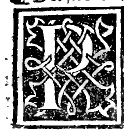

CHAPTER XVII¶
On the Site of the Triglyphs and the Union of All the Preceding Parts in the Temple Portal Called Porta Speciosa (Plate 0185).

Above the epistyle and cornice (or in the Doric order along the frieze zone and attic parapet) are set the triglyphs (tigrafi)—small rectangular piers carved with three vertical ribs (*tre coste*) and two channels (*doi canellati*) like little grooved pilasters, spaced two or two and a half widths apart directly over the axes of the columns below. Between them stand solid stone slabs (lastroni / metope) like parapets, upon which are carved in relief ox-skulls (*bucrania / teste de capi de buoi*), horse-heads, garlands (*ghirlande*), sacrificial paterae/basins (*bacili*), and rosettes (*rosoni*).
The Printing Press in Venice and the Synthesis in the Porta Speciosa (Plate 0185)
There would be much more to say concerning these ornaments, were more time granted to me at present; for continually, day and night, I must stand over the printing presses and their compositors and engravers (*in su li torcoli e lor calcographi*) to govern and proofread our works with all the diligence they require! Yet I wished to set down this brief treatise out of affection for you, as an earnest of the larger work on Architecture that we hope to publish at greater leisure.
And having given you separately:
The round column with its base, capital, stylobate, and stereobate (Plate 0213), and
The epistyle (architrave) with its frieze (*:term:`zophoro <zophoro>`*) and cornice (Plate 0215),
it seemed fitting to join all of them together in a single complete monument so that they might display their united effect before your eyes! Accordingly, I have assembled all of them in the full-page plate of the Temple Portal called *:term:`Porta Speciosa <porta-speciosa>`* (:term:`PORTA TEMPLI DOMINI DICTA SPECIOSA <porta-speciosa>`, Plate 0185), crowned at the summit by the triangular pediment (el :term:`frontespicio <fastigio>` triangolare) which both Ancients and Moderns use in works of royal and sacred majesty, where you may behold every part described above with your own eyes (oculata fide).